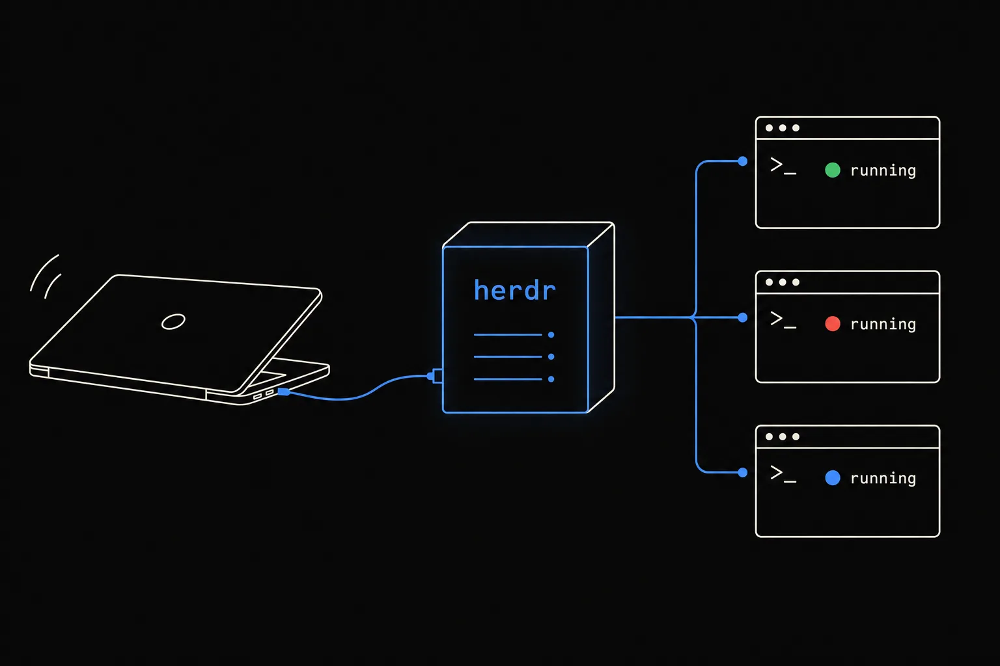
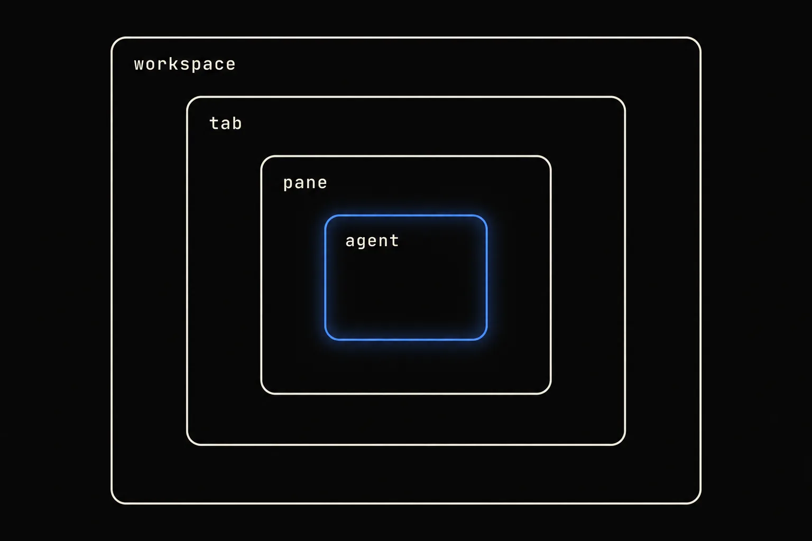
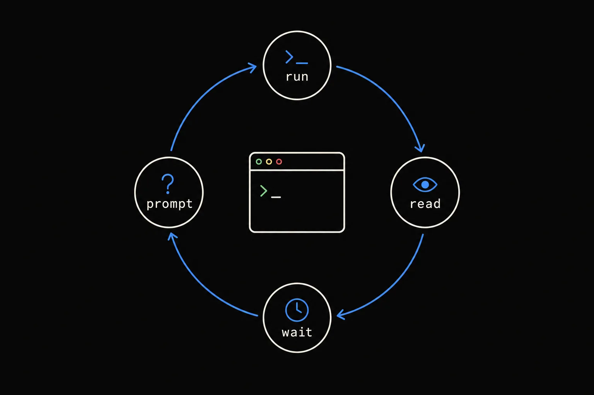
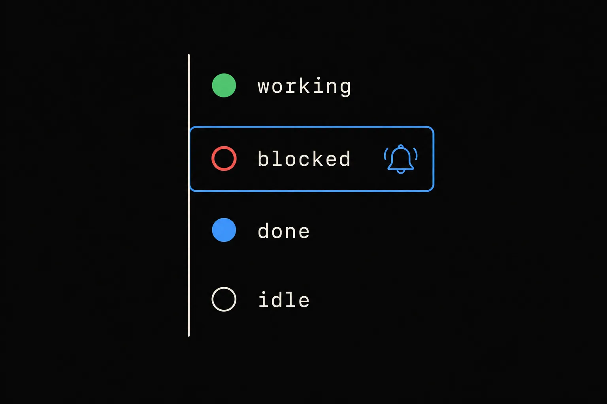
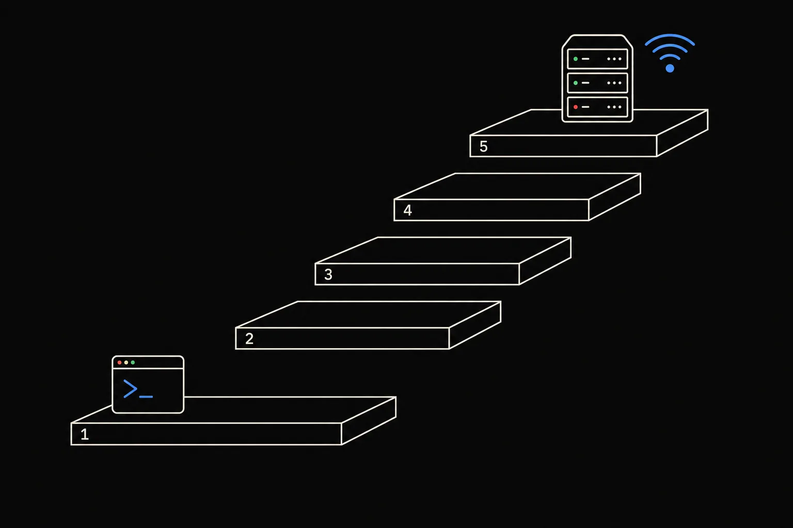
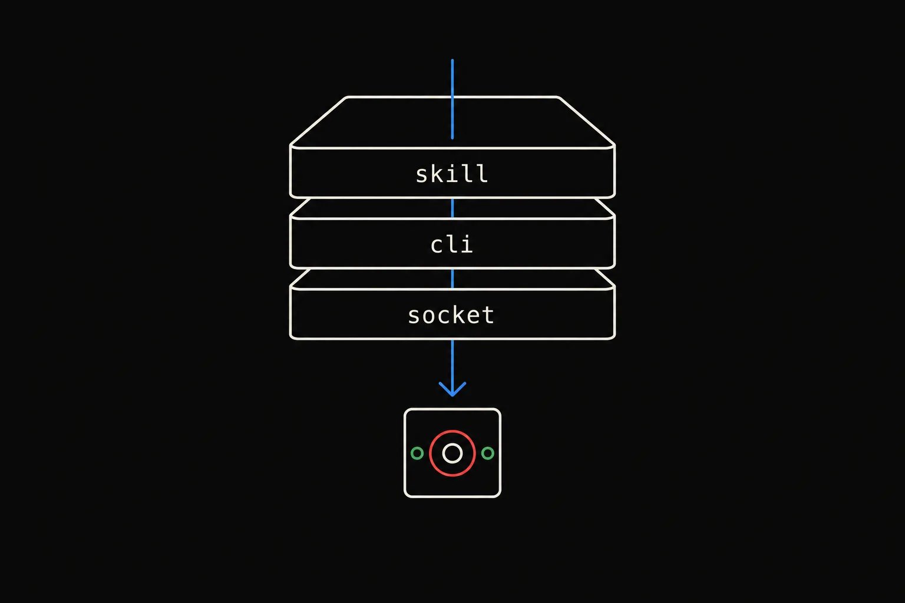

Herdr is the runtime your coding agents live on. A server holds real terminals open on your laptop, desktop, or a box you rent — so the work survives the lid closing, every agent's state is visible at a glance, and agents can drive the terminal themselves over a CLI and socket API.
curl -fsSL https://herdr.dev/install.sh | sh
Apps manage the herd. Herdr runs it.herdr.dev/compare
prefix+q, SSH in from a phone, or herdr --remote workbox — the PTYs never noticed. Even herdr update --handoff keeps the processes alive.agent wait --until blocked returns.agent start, agent prompt --wait, agent read, pane wait-output --regex ride the same NDJSON socket integrations use. A bundled SKILL.md (herdr --skill) teaches any agent the rules, guarded by HERDR_ENV=1.Herdr is a terminal workspace manager: it keeps real terminal processes running and adds structure around them. Learn the boxes and the verbs fall out of them.

| Box | What it is | ID shape | The verb |
|---|---|---|---|
| Server | Background process that owns every pane and PTY. Clients attach and detach. | ~/.config/herdr/herdr.sock | herdr · herdr server stop |
| Session | A persistent server namespace. The default one is plain herdr; named ones get their own panes and socket. | work | herdr --session work |
| Workspace ("space") | Top-level project container — one per repo or task. Its sidebar state rolls up from the agents inside. | w1 | herdr workspace create --cwd … --label … |
| Worktree | A workspace with Git checkout provenance, grouped under its parent repo. | w3 | herdr worktree create --branch … |
| Tab | One layout inside a workspace. | w1:t1 | herdr tab create --label … |
| Pane | A real terminal. Split right or down, rename, read, send input, close. | w1:p1 · term_abc123 | herdr pane split --direction right |
| Agent | A process Herdr recognizes in a pane, with a lifecycle state and an optional name. | reviewer | herdr agent start reviewer --kind codex --pane w1:p2 |
herdrLaunch or attach to the default session in the terminal you already use — Ghostty, kitty, iTerm, Alacritty, Windows Terminal.
ssh box then herdrtmux-style: the server lives on the box, any tty attaches. Works from phone SSH clients; on iPhone the docs recommend Moshi.
herdr --remote workboxA local client streams the remote UI, keeps your local keybindings, and bridges clipboard image paste. Auto-installs the matching binary on the host.
Workspace → Tab → Pane, and an Agent lives in a Pane. Every create call returns the IDs you need next: .result.workspace.workspace_id, .result.tab.tab_id, .result.root_pane.pane_id, .result.pane.pane_id. Capture them with jq and thread them through every later call.
Two layers of verbs. Pane commands address the raw terminal regardless of who is in it. Agent commands resolve the live agent and understand its lifecycle.
esc, ctrl+c, up…--source visible | recent | recent-unwrapped | detection, --lines N.--timeout MS.
# 1. topology first — agent start never creates layout split=$(herdr pane split --current --direction right --no-focus) review_pane=$(printf '%s\n' "$split" | jq -r '.result.pane.pane_id') # 2. start a named agent in that shell pane, args after -- go to the executable herdr agent start reviewer --kind codex --pane "$review_pane" -- -m gpt-5.4 # 3. prompt and block until it settles (idle | done | blocked by default) herdr agent prompt reviewer "Review the current diff" --wait --timeout 120000 herdr agent read reviewer --source recent-unwrapped --lines 120 # 4. wait for a question, look at it, answer its UI herdr agent wait reviewer --until blocked --timeout 120000 herdr agent read reviewer --source recent-unwrapped --lines 80 herdr agent send-keys reviewer esc # 5. an ordinary process is just a pane herdr pane run w1:p3 "just test --watch" herdr pane wait-output w1:p3 --regex "passed|failed" --timeout 120000
| Goal | Command | Returns / gotcha |
|---|---|---|
| Run a shell command and submit it | pane run <id> "cmd" | Prefer over send-text + send-keys enter. |
| Send literal text without Enter | pane send-text <id> "…" | Low-level, non-submitting. |
| Press keys or chords | pane send-keys <id> ctrl+c | enter tab esc backspace up down f1 minus plus backtick; legacy C-c. |
| Wait for output text | pane wait-output <id> --regex "…" --timeout MS | Searches the snapshot immediately, so text already present matches. |
| Start a supported agent | agent start <name> --kind claude --pane <id> | Pane must be at its shell prompt. 30 s default startup timeout. agent_not_ready if it blocks during startup. |
| Submit a prompt, optionally waiting | agent prompt <name> "…" --wait --until done | agent_blocked if it is already asking you something; agent_prompt_stalled if nothing changes in 5 s. |
| Wait for a lifecycle state | agent wait <name> --until blocked --until idle | Event-driven, server-owned; pinned to the current occupant. |
| Read history from a full-screen agent | agent read <name> --lines 400 | Pages through Claude Code / OpenCode alt-screen via mouse-scroll; needs idle, else agent_not_idle. |
send-text types; run submits. Waits have no default timeout. agent start requires an existing shell pane and never creates, splits, or moves layout. Names must match [a-z][a-z0-9_-]{0,31} and are cleared when the agent exits. Server errors are JSON on stderr with exit 1; bad syntax exits 2.
Five states, one authority per pane. Lifecycle hooks (Pi, OMP, OpenCode, Kimi, Kilo, MastraCode) are authoritative; everyone else is classified from a TOML screen manifest evaluated against the live bottom of the screen.
| State | Meaning (docs wording) | Rollup |
|---|---|---|
| ◉ blocked | Needs input, approval, or a decision. Detection is deliberately strict. | Pane, tab and workspace all look blocked. Toast + "request" sound. |
| ● working | Actively running. | Workspace shows active. |
| ● done | Finished and you have not looked at it yet. Same underlying idle state until the tab is focused. | Stays visible until viewed. Reading via CLI does not mark it seen. |
| ○ idle | Finished or waiting and has been seen. | Quiet. |
| ? unknown | Cannot confidently classify. Does not prove completion. | Use exact --until states when it matters. |
An orchestrator gets told two ways: push the discrete lifecycle events, poll only the free-form text you must inspect.

| To know… | Use | Push or poll |
|---|---|---|
| an agent settled (idle / done / blocked) | herdr agent wait reviewer --timeout 120000 | push (blocks) |
| an agent needs you, specifically | herdr agent wait reviewer --until blocked | push (blocks) |
| any status change on any pane | {"method":"events.subscribe","params":{"subscriptions":[{"type":"pane.agent_status_changed"}]}} | push (socket stream) |
| a log line appeared | herdr pane wait-output w1:p3 --regex "…" | poll-until-match |
| what the agent actually wrote | herdr agent read reviewer --source recent-unwrapped --lines 120 | poll |
| the human, in the room | herdr notification show "reviewer done" --body "…" --sound done | toast · sound · system |
[ui.toast] delivery = "herdr" # off | herdr | terminal | system delay_seconds = 1 [ui.toast.herdr] position = "bottom-right" [ui.sound] enabled = true done_path = "~/sounds/done.mp3" request_path = "~/sounds/request.mp3" [ui.sound.agents] droid = "off" # per-agent override: default | on | off [ui] status_indicators = "symbols" # dots | symbols agent_panel_sort = "priority" # spaces | priority — blocked floats to the top
Anything can own a pane's state: herdr pane report-agent "$HERDR_PANE_ID" --source custom:my-agent --agent my-agent --state working, then pane release-agent on exit. Display-only titles, labels and $tokens for sidebar rows go through pane report-metadata … --title … --token cost=$1.20 --ttl-ms 60000.
The capability library: 30 natural-language prompts that climb from "open one workspace" to "a fleet of reviewers across worktrees that survives a laptop reboot", then customize the whole thing. Hit Copy prompt and hand any one to an agent running inside Herdr.

Each prompt assumes the agent has the Herdr skill (npx skills add herdrdev/herdr --skill herdr -g, or read herdr --skill) and is running inside a Herdr pane, where HERDR_ENV=1. The skill's rules apply: use --no-focus for background work, parse IDs from JSON, never close what you didn't create, never herdr server stop.
The atomic loop: make a workspace, split it, type into it, read it back, tidy up. No agents yet — just the orchestrator and terminals.
--source recent-unwrapped --lines.pane split --direction right|down --ratio.api snapshot and pane process-info.The pivot: the pane an agent controls can itself hold another agent. Start it, prompt it, wait on its state, read what it said.
agent start --kind codex in the new shell pane with a name.agent prompt --wait --timeout returns when the agent settles, not when text appears.--until blocked, inspect the dialog, respond with agent send-keys.agent explain shows which manifest rule or hook produced the state.send-keys esc, then a new prompt; handle agent_blocked deliberately.One orchestrator, many agents. Shard across worktrees, wait on whichever needs you first, triage from agent list --json.
agent list; blocked first.worktree create --branch opens a grouped workspace with its own checkout.agent waits; whoever goes blocked first gets handled.worktree remove.Declare whole tabs as a BSP tree, decorate panes with live tokens, and filter the agent sidebar programmatically.
layout.apply over the socket: editor | tests | server as a nested split tree.pane report-metadata --token + a sidebar row using $cost.pane move --new-workspace; IDs change, aliases stay.agent.view.set: show only blocked agents, sorted by attention.The runtime's whole point: detach and the herd keeps going. Named sessions, SSH thin client, live handoff on update, native agent resume after restart.
herdr --remote user@host: local client, remote runtime, local keys + clipboard.herdr update --handoff hands live PTYs to the new server.claude --resume, codex resume, pi --session…terminal session observe streams NDJSON frames; control --takeover types into it.167 config keys, a keymap that can go prefix-free, and a plugin API that is simply the CLI. Everything reloads live with herdr server reload-config.
herdr-plugin.toml + a shell script; react to worktree.created; link and test it.Three layers, one protocol. The skill teaches the rules, the CLI wraps every method and prints JSON, and the socket is what integrations, plugins and your own clients speak directly.

herdr api schema --json is the contract.herdr --skill prints the bundled SKILL.md; install into an agent with npx skills add herdrdev/herdr --skill herdr -g. Guardrail: if HERDR_ENV=1 is not set, the agent should stop and say it is not running inside a Herdr-managed pane. A separate https://herdr.dev/agent-guide.md exists for an agent teaching a human.workspace, worktree, tab, pane, agent, terminal, session, plugin, integration, notification, api — talks to the server over the socket and prints JSON for deterministic scripting. Inside a pane, --current resolves via HERDR_PANE_ID.~/.config/herdr/herdr.sock (named sessions: ~/.config/herdr/sessions/<name>/herdr.sock; Windows: a named pipe). Resolution order: --session → HERDR_SOCKET_PATH → HERDR_SESSION → default. Protocol 20.# request {"id":"req_split","method":"pane.split","params":{"direction":"right","ratio":0.333,"env":{"HERDR_ROLE":"tests"}}} # response {"id":"req_split","result":{"type":"pane_info","pane":{"pane_id":"w1:p2","terminal_id":"term_abc123","workspace_id":"w1","tab_id":"w1:t1","focused":false,"agent_status":"unknown","revision":42}}} # error {"id":"req_9","error":{"code":"not_found","message":"pane not found"}} # prompt + wait in ONE request — no race between separate calls {"id":"req_p","method":"agent.prompt","params":{"target":"reviewer","text":"Review the diff","wait":{"until":["idle","blocked"],"timeout_ms":120000}}} # subscribe to the doorbell {"id":"req_ev","method":"events.subscribe","params":{"subscriptions":[{"type":"pane.agent_status_changed","agent_status":"blocked"}]}}
| Family | Methods |
|---|---|
| server | ping · server.stop · server.reload_config · server.agent_manifests · server.reload_agent_manifests · session.snapshot · notification.show |
| workspace / worktree / tab | workspace.create|list|get|focus|rename|move|move_block|report_metadata|close · worktree.list|create|open|remove · tab.create|list|get|focus|rename|move|close |
| pane | pane.split|swap|move|zoom|layout|process_info|neighbor|edges|focus_direction|resize|list|current|get|rename|send_text|send_keys|send_input|read|wait_for_output|report_agent|report_agent_session|report_metadata|release_agent|close · pane.graphics.* (experimental kitty graphics) |
| layout | layout.export · layout.apply · layout.set_split_ratio |
| agent | agent.list|get|read|explain|send_keys|prompt|wait|rename|focus|start · agent.view.set|clear |
| events | events.subscribe · events.wait — workspace.* · tab.* · pane.created|updated|closed|focused|moved|exited|agent_detected|output_matched|agent_status_changed|scroll_changed · layout.updated · worktree.* |
| plugin / integration | plugin.link|list|unlink|enable|disable · plugin.action.list|invoke · plugin.log.list · plugin.pane.open|focus|close · integration.install|uninstall |
HERDR_ENV=1 · HERDR_PANE_ID · HERDR_TAB_ID · HERDR_WORKSPACE_ID · HERDR_SOCKET_PATH · HERDR_SESSION · HERDR_BIN_PATH (plugins) · HERDR_ACTIVE_PANE_CWD (custom commands).
Use --no-focus for background work. Use --current or explicit IDs, never guess. Parse IDs from JSON. Split wide panes right, tall panes down. Preserve --cwd "$PWD". Never close things you didn't create. Never herdr server stop.
tmux muscle memory works: the prefix is ctrl+b. The docs say learn these five first.
[keys] # bindings may be arrays — add a prefix-free chord alongside the default focus_pane_left = ["prefix+h", "ctrl+alt+h"] focus_pane_right = ["prefix+l", "ctrl+alt+l"] split_right = ["prefix+v", "ctrl+alt+v"] [[keys.command]] key = "prefix+shift+l" type = "popup" # popup | pane | shell | plugin_action command = "lazygit" width = 90 height = 90
The docs recommend ctrl+alt as "almost untouched everywhere" (mapped in Ghostty, iTerm2, Terminal.app, kitty, WezTerm, Alacritty, Warp, Windows Terminal, GNOME Terminal, Konsole). Avoid ctrl+alt+arrows, ctrl+alt+t, ctrl+alt+l/a, ctrl+alt+s/u, and ctrl+alt+f1..f12. Copy mode is vim: h j k l w b e { } ctrl+u/d / ? n N v y q.
Twenty agent CLIs are detected out of the box. Integrations come in two kinds: lifecycle authority (the agent tells Herdr its state through hooks) and session identity (the agent tells Herdr which conversation it is, so it can be resumed).
| Agent | --kind | State authority | Integration gives | Resume after restart |
|---|---|---|---|---|
| Claude Code | claude | screen manifest | session identity (hooks in ~/.claude/settings.json) | claude --resume <id> |
| Codex | codex | screen manifest | session identity (~/.codex/hooks.json, [features] hooks = true) | codex resume <id> |
| Pi | pi | lifecycle hooks | state + session (~/.pi/agent/extensions/…) | pi --session |
| OpenCode | opencode | plugin (lifecycle) | state + session | opencode --session |
| OMP · Kimi Code · Kilo Code · MastraCode | omp · kimi · kilo · mastracode | lifecycle hooks | state + session | --resume= · --session · --thread |
| GitHub Copilot CLI · Cursor · Devin · Droid · Qoder · Qwen · Hermes · Antigravity · Grok | copilot · cursor · devin · droid · qodercli · qwen · hermes · agy · grok | screen manifest | session identity | copilot --resume= · cursor-agent --resume · … |
| Amp · Kiro · Maki · Gemini CLI · Cline | amp · kiro · maki · gemini · cline | screen manifest | none (Gemini/Cline "detected but less thoroughly tested") | — |
herdr integration install claude # writes ~/.claude/hooks/herdr-agent-state.sh + settings.json hooks herdr integration install codex pi opencode herdr integration status --outdated-only herdr server agent-manifests # which TOML manifests are active, remote versions herdr server update-agent-manifests # fetch updates from herdr.dev now # local overrides always win: ~/.config/herdr/agent-detection/<agent>.toml herdr agent explain w1:p2 --verbose # which rule matched, what evidence herdr agent explain --file screen.txt --agent codex --json # wrap anything that isn't detected: HERDR_AGENT=claude fence -- claude
A directory with herdr-plugin.toml and argv commands in any language. [[actions]], [[events]], [[panes]] (overlay · popup · split · tab · zoomed), [[link_handlers]]. No sandbox — treat like an editor extension.
herdr plugin install owner/repo. herdr.dev/plugins auto-indexes every public GitHub repo tagged herdr-plugin every 30 minutes — 762 plugins, no submission, no review queue. Seen often: herdr-lazygit, herdr-hud, herdr-kanban, herdr-ntfy-notify, herdr-layout.
Local persistent sessions, --remote to Linux/macOS hosts, cmd.exe panes, notifications. Not yet: terminal attach, Windows as a remote host, live handoff. Paste is ctrl+shift+v.
The columns are categories, not enemies. The row that sorts the field is the second one: what happens to the agents when the thing you're looking at goes away.
| Capability | herdr | tmux · zellij | cmux · warp | conductor · emdash · superset |
|---|---|---|---|---|
| Kind of thing | runtime + clients | terminal multiplexer | terminal app | manager app |
| Work survives its own UI closing | yesthe server owns the terminals | yesdetach | partialsession restore | while the app is open |
| Runs inside your existing terminal | yes | yes | replaces it | desktop app |
| Semantic agent state | blocked · working · done · idle | — | attention cues | workspace status |
| Detach, reattach, SSH in | yes, any tty | yes | partial | remote projects |
| Direct attach to one agent | yes | — | — | — |
| API: agents drive themselves | read · send · wait · split · attach | terminal scripting | app APIs | workflow APIs |
| Worktree and diff review flow | pairs with itworktrees yes, diff review no | — | partial | yes, their core |
| Clients on the same runtime | TUI · CLI · plain SSHmore coming | its own client | the app only | the app only |
Condensed from herdr.dev/compare ("9 tools compared · one runtime"). Solo, the process dashboard, is omitted here.
tmux keeps terminals alive; so does Herdr. The difference is Herdr knows which terminals are agents, what state each one is in, and how to wait on them. tmux sees panes.
cmux is a Mac terminal app built around agents. Herdr isn't an app: it's the runtime underneath, in whatever terminal you already use, reachable over SSH.
Warp wants to be your terminal and your platform. Herdr keeps your terminal and owns what runs inside it.
If you run cmux on a Mac, the two compose: cmux is the window, Herdr is the runtime the agents live on inside it. The orchestration verbs map almost one-to-one — cmux send / send-key / read-screen ↔ herdr pane send-text / send-keys / read — with Herdr adding the agent layer (agent start / prompt / wait) and detach.